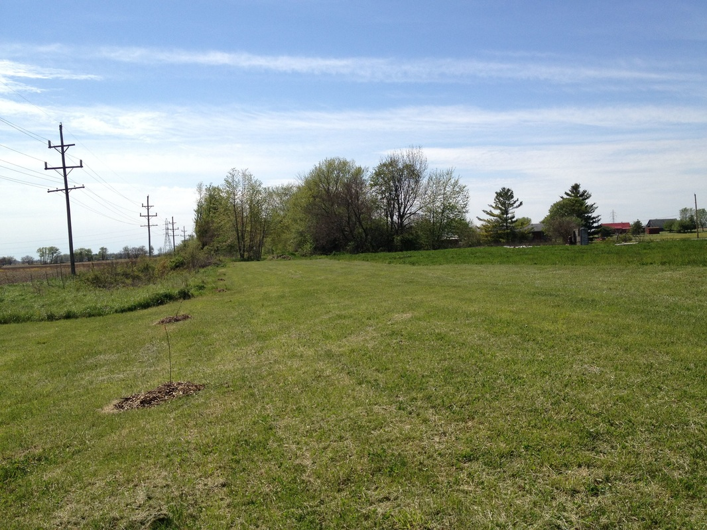
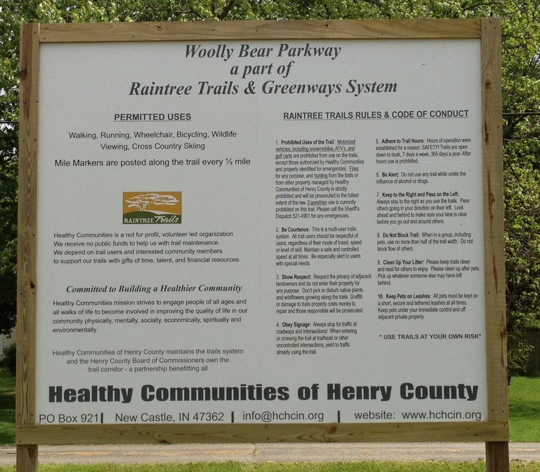

Kennard Community
Emergency Contacts - Town of Kennard, Indiana
For all emergencies: Dial 911
Law Enforcement
- Kennard Police (Non-Emergency): 765-571-2640
- Henry County Sheriff: Main Office: 765-521-7032, Dispatch: 765-529-4901, Investigations: 765-529-5669
- Hancock County Sheriff: Administration: 317-477-1147, Investigations: 317-477-1199, Jail Division: 317-477-1158
- New Castle Police: 765-529-4890
- Knightstown Police: 765-345-2785
- Middletown Police: 765-354-2281
Fire Departments
- Kennard Fire Department: 911
- New Castle Fire Department: 765-521-6815
- Knightstown Fire Department: 765-345-2121
- Middletown Fire Department: 765-354-2268
EMS Services
- New Castle-Henry County EMS: 765-521-6860
- Henry County EMS (Sheriff Ambulance): 765-545-0330
Utility Contacts
- Fountain Town Gas Emergency: 800-379-1800 or 833-763-6393
- Duke Energy (Residential): 800-777-9898
- Duke Energy (Business): 800-653-5307
Town of Kennard Officials
- Clerk/Treasurer: clerk@kennardin.com
- Council President: steve@kennardin.com
- Council Member: holly@kennardin.com
- Council Member: jason@kennardin.com
- Police Chief: bill@kennardin.com
- Deputy Marshal: deputymarshal@kennardin.com
- Fire Chief: firechief@kennardin.com
Additional Contacts
- Indiana Department of Environmental Management (Spills): 888-233-7745
- National Weather Service (Storm Info): 317-856-0664
Kennard Aerial Photography

Local Real Estate
Realtor.comKennard Trail
The Kennard Trail (Woolly Bear Parkway) is part of The Raintree Trails and Greenways Systems. For more information on this trail and additional area trails in Henry County please visit www.hchcin.org.

